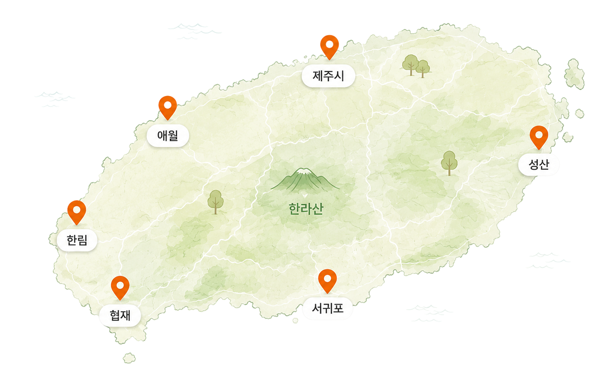

OUR STORY
왜 제주비건 지도를
왜 제주비건 지도를
만들었을까요?
제주에는 비건을 지향하는 여행자와 주민들이 늘고 있지만,
비건 식당 정보는 여러 곳에 흩어져 있어 찾기 어려웠습니다.
작은 로컬 식당과 카페가 가진 선택지를 한곳에 모아,
더 많은 사람이 제주에서 자신에게 맞는 식사를 발견할 수 있도록 시작했습니다.

WHAT WE DO
우리가 하는 일
제주에서 더 쉽게 비건 선택을 이어갈 수 있도록 정보를 모으고 다듬습니다.
-
비건 식당 데이터 구축
확인된 식당 정보를 지도와 목록으로 제공합니다.
-
비건 여행 코스 큐레이션
식당, 카페, 관광지를 엮어 제주 여행 코스를 제안합니다.
-
신규 식당 검증 및 등록
제보를 확인하고 방문자가 참고할 정보를 정리합니다.
-
커뮤니티 제보 관리
사용자 제보를 바탕으로 더 정확한 지도를 만들어갑니다.
OUR PRINCIPLES
제주와 자연을 연결하는 다리
단순한 목록보다 중요한 것은 실제로 도움이 되는 정보라고 믿습니다.
OUR COMMUNITY
함께 만들어가는
함께 만들어가는
제주비건
여행자, 식당 운영자, 지역 주민의 제보가 모여 제주비건지도가 자랍니다.
- 99+등록된 비건 식당
- 20+함께한 네트워크
- 5+카테고리
- 1000+커뮤니티 제보
ABOUT ORGANIZATION
생명 환경 공동체
생명 환경 공동체
제주비건
제주비건은 생명존중과 지속가능한 제주를 위한 로컬 커뮤니티입니다.
비건 식문화를 더 쉽고 친근하게 소개하며, 모두가 더 나은 선택을 이어갈 수 있도록 돕습니다.